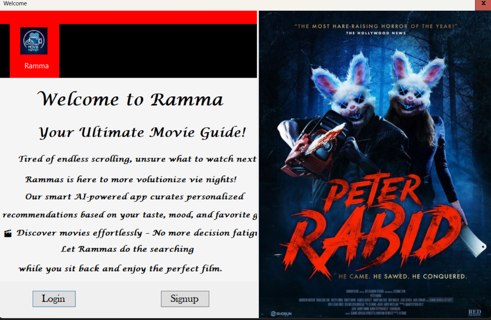
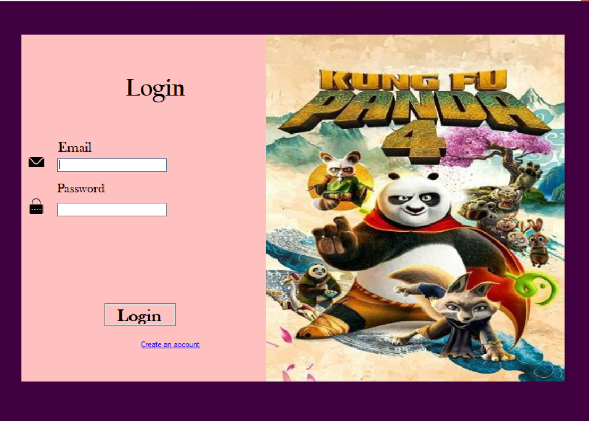

Fourth-Year Information Systems Student
Front-End Developer
Currently Learning HTML • CSS • JavaScript • Figma
Passionate about software development, user interface design, and business technology solutions. Currently learning modern web development while building practical projects.
View Projects Contact Me View CV Download CVHello! My name is Marsilas fikru, and I am a fourth-year Information Systems undergraduate at Wachemo University, Hossana, Ethiopia.
Throughout my academic journey, I have participated in several team software development projects, where I mainly contributed to the front-end design and user interface. These experiences have strengthened my teamwork, communication, and problem-solving skills.
I am currently learning HTML, CSS, JavaScript, and Figma to improve my web development and UI/UX design skills. I enjoy building clean, user-friendly interfaces and continuously learning new technologies.
My goal is to become a professional Software Developer and contribute to creating technology solutions that solve real-world problems.
I am seeking an opportunity to apply my academic knowledge, strengthen my software development skills, and contribute to innovative technology projects while continuing to learn and grow as a future software developer.
Fourth Year • First Semester
University: WACHEMO UNIVERSITY
Expected Graduation: 2027
Java
C#
C++
A responsive personal portfolio website developed to showcase my
education, technical skills, and software development projects.
Technologies: HTML • CSS • JavaScript
Features: Responsive design, animations, and modern UI.


University Team Project
Role: Front-End Developer
Technologies: C# MySQL
A university team project designed to recommend movies based on user preferences. I contributed to the front-end development by creating user-friendly interfaces and improving the overall user experience. The application was developed using C# and MySQL.
University Team Project
Role: Front-End Developer
Technologies: Java • MySQL
A university team project developed to manage inventory records efficiently. My role focused on front-end development, designing intuitive screens for managing products and stock information. The system was built using Java and MySQL.
fmarsilas@email.com
0974705774
Addis Ababa, Ethiopia